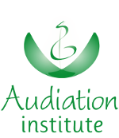

Cos'è Musilieu
MUSILIEU è un luogo speciale dove vivere l'esperienza della musica in modo autentico; è un percorso per apprendere il linguaggio musicale fin dai primi mesi di vita, seguiti con cura e competenza da educatori-musicisti appassionati del proprio lavoro; è un laboratorio che guida la persona a riconoscere le molteplici caratteristiche sintattiche che colorano la musica attraverso il solo uso della voce cantata e del corpo in movimento; è un progetto culturale di ampia portata che si affida alla Teoria dell’Apprendimento Musicale di E.E. Gordon (MLT).
MUSILIEU è frutto della passione, creatività, esperienza e professionalità di Federica Braga e Claudia Veronese, Insegnanti Accreditate Audiation Institute che da anni a Milano coltivano nei loro piccoli allievi e nelle loro famiglie l'amore per la musica.
Perché Musilieu
Per una società futura più musicale: perché i bambini che oggi si avvicinano alla musica imparando a conoscerla e ad amarla sono gli adulti di domani.
Per un apprendimento musicale rivolto al bambino ma condiviso con chi gli è vicino e lo sostiene nella crescita: genitori e famiglia in primo luogo ma anche tutti gli altri care-giver. Perché solo così l'esperienza della musica diventa per tutti significativa e profonda.
Per un'esperienza di ascolto della musica consapevole e quindi più godibile. Perché sviluppare l'audiation, ovvero quella particolare forma di pensiero che permette di comprendere sintatticamente il linguaggio musicale, consente al bambino e all'adulto di riconoscere se quello che si sta ascoltando è in modo maggiore, dorico, … o se ritmicamente ha un metro binario, inusuale, …
Per apprezzare il silenzio, la concentrazione e il rispetto: valori intrinseci al linguaggio musicale ma con una portata universale.
Chi Siamo
MUSILIEU è frutto della passione, creatività, esperienza e professionalità di Federica Braga e Claudia Veronese che da anni a Milano coltivano nei loro piccoli allievi e nelle loro famiglie l'amore per la musica, proponendo corsi, concerti e altre attività sotto il segno distintivo della MLT di Gordon.
-
Federica Braga
"La musica per me è movimento, ricordo, impegno. È capace di farmi vedere il mondo sotto una luce diversa, di farmi sentire più viva".
- Diplomata in Pianoforte presso il Conservatorio G. Verdi di Milano.
- Laureata in Lettere Moderne a Indirizzo Pedagogico presso l’Università Statale di Milano, con una Tesi sulla Teoria dell’Apprendimento Musicale di Edwin Gordon.
- Dal 1994 al 2000 Insegnante di pianoforte presso la Scuola di Musica di Alice Mazzei.
- Dal 2000 al 2013 Insegnante e Formatore Aigam nella diffusione della MLT di E.Gordon.
- Da novembre 2013 Insegnante Accreditato e Formatore Audiation Institute, ente di formazione con il quale MUSILIEU collabora nella diffusione della MLT in Italia.
- Da aprile 2014 Responsabile e fondatrice di MUSILIEU, assieme a Claudia Veronese.
-
Claudia Veronese
“La musica è un'arte, un amore, una dedizione. È la piena espressione di me, anche nel silenzio. Non posso che ascoltarla, cantarla e insegnarla”.
- Diplomata in canto moderno presso la NAM Nuova Audio Musicmedia di Milano.
- Laureata in Scienze dell'Educazione con una tesi pedagogico-musicale presso la Facoltà di Formazione Primaria dell'Università Bicocca.
- Insegnante di canto moderno e cantante-live in formazioni acustiche, musical e trasposizioni musicali di film (tra cui Jesus Christ Superstar e Pulp Fiction).
- Dal 2006 al 2013 Insegnante Associata Aigam per la diffusione della MLT di E. Gordon.
- Dal 2012 Insegnante aderente al progetto Opera Domani di As.li.co (Associazione Lirico Concertistica Italiana), per la diffusione della musica lirica nell'infanzia.
- Da novembre 2013 Insegnante Accreditato Audiation Institute, ente di formazione con il quale MUSILIEU collabora nella diffusione della MLT in Italia.
- Da aprile 2014 co-fondatrice di MUSILIEU assieme a Federica Braga.
Gordon e la MLT
Edwin Elihas Gordon è nato nel 1927 nel Connecticut. Fu il padre Martin ad avvicinarlo alla musica, regalandogli a quattordici anni un contrabbasso, per evitare che il dolore provocatogli dalla morte della madre lo portasse a frequentare cattive compagnie.
Gordon diventa un contrabbassista nell'epoca d'oro del jazz e dello swing americano. Fu il primo allievo di Sid Weiss, che in quegli anni suonava con i migliori jazzisti bianchi, fra cui Luis Prima e Benny Goodman. Furono proprio le lezioni con Weiss a ispirare a Gordon il concetto di “audiation”, cardine della sua futura teoria. Per un certo periodo ha inoltre occasione di suonare nella band di Gene Krupa e prendere lezioni da Milton Kestenbaum, contrabbassista della NBC Symphony diretta da Arturo Toscanini. Ciò gli permette di assistere a molte prove d'orchestra del Maestro italiano, arricchendo ulteriormente la sua formazione.
L'esperienza maturata come musicista in ambito classico e jazz lo porta a riflettere su alcune importanti questioni: che cos'è l'attitudine musicale? Come definirla in modo da identificare un'educazione musicale adatta a svilupparla in modo naturale nel bambino? Gordon dedicherà tutta la vita a cercare di rispondere a queste domande. È da qui e attraverso un'instancabile attività di ricerca che arriverà a sviluppare la Music Learning Theory – teoria che spiega appunto come funziona l'apprendimento musicale e il cui fulcro si basa sulla scoperta che i sistemi di apprendimento del linguaggio musicale sono simili a quelli del linguaggio parlato. Una teoria evolutiva, non rivoluzionaria, come egli stesso umilmente sostiene (“evolutionary, not revolutionary”).
Chi come noi ha avuto il privilegio di incontrarlo e di averlo avuto come Maestro ne ha conosciuta la grande umanità e sensibilità, la saggezza e la capacità di trasmettere in modo semplice una vasta e complessa conoscenza. Perché apprendere la musica può essere davvero semplice, come imparare a parlare.
Per approfondimenti:
Edwin E. Gordon
Musilieu e Audiation Institute
MUSILIEU crede fermamente che chi si occupa dell'educazione e dell'apprendimento musicale dell'essere umano fin dalla sua primissima età debba essere molto più che preparato.
Per la formazione continua e permanente di tutti coloro che collaborano all'interno del progetto MUSILIEU e per la scelta degli insegnanti Federica e Claudia riconoscono in Audiation Institute il proprio ente di riferimento.
Per conoscere Audiation Institute www.audiationinstitute.org